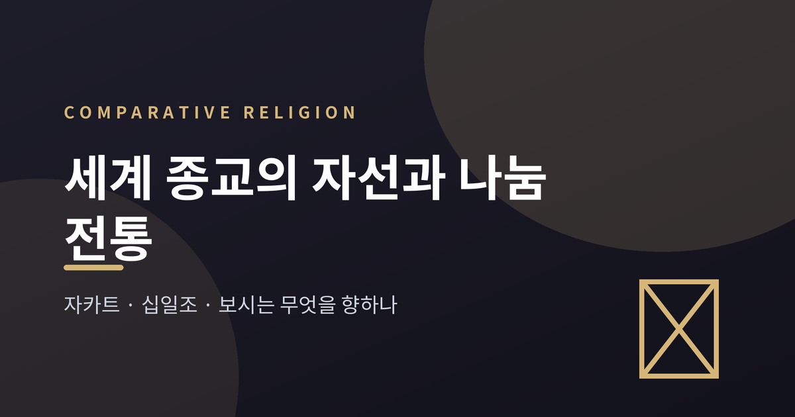
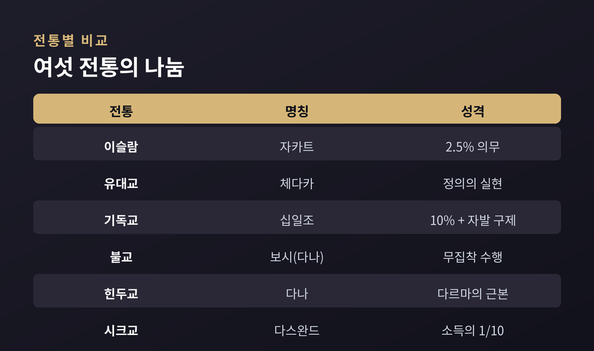
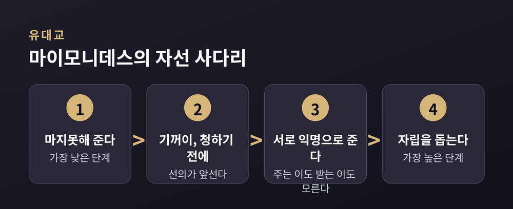
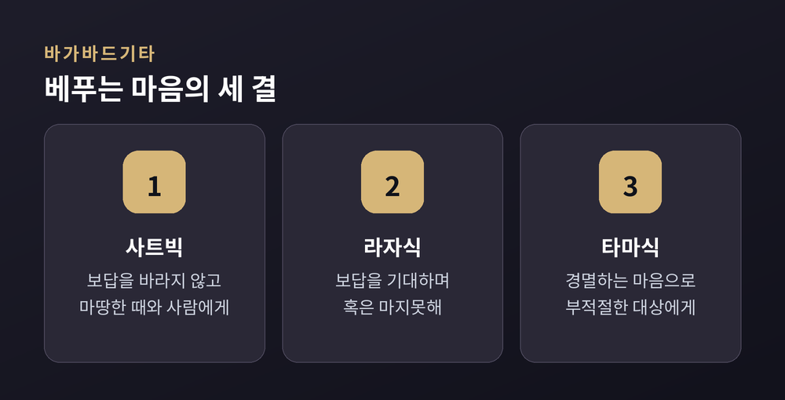

세계 종교의 자선과 나눔 전통 — 자카트·십일조·보시는 무엇을 향하나
이번 글에서는 세계 여러 종교의 자선과 나눔 전통을 나란히 살펴보겠습니다. 이슬람의 자카트, 유대교의 체다카, 기독교의 십일조, 불교의 보시, 힌두교의 다나, 시크교의 다스완드까지 — 각 전통이 나눔을 어떻게 이해하는지, 그 공통점과 차이는 무엇인지 교양의 눈으로 정리했습니다. 특정 신앙을 옹호하거나 우열을 가리려는 글이 아닙니다.

왜 종교마다 '나눔'을 말하는가
낯선 종교의 경전을 펼쳐도 빠지지 않는 주제가 있습니다. 바로 베풂입니다.
주요 종교는 예외 없이 자선과 연민, 관대함을 덕목으로 가르칩니다. 유대교의 체다카, 기독교의 구제, 이슬람의 자카트는 서로 다른 언어를 쓰지만 같은 방향을 가리킵니다. 궁핍한 이를 향한 책임입니다.
흥미로운 점이 하나 있습니다. 여러 전통에서 나눔은 받는 사람만을 위한 행위가 아니라고 말합니다. 주는 사람 자신을 위한 것이기도 하다는 것입니다. 이 관념이 각 전통에서 어떻게 변주되는지 따라가 보겠습니다.
여섯 전통을 한자리에
먼저 전체 그림을 표로 정리했습니다. 명칭과 대략의 기준, 성격을 나란히 두면 차이가 한눈에 들어옵니다.

이슬람의 자카트는 이슬람 5대 기둥 가운데 하나입니다. 예배, 단식과 나란히 서는 의무적 나눔입니다. 비율은 2.5%로 정해져 있습니다. 다만 조건이 붙습니다. 재산이 최소 기준선인 니사브를 넘고, 그 상태로 한 태음년이 지나야 비로소 의무가 생깁니다.
유대교의 체다카는 흔히 '자선'으로 옮기지만 어원이 말해 주는 결은 조금 다릅니다. 어근인 체데크는 '정의'를 뜻합니다. 그래서 체다카는 시혜라기보다 세상에서 정의를 실현하는 마땅한 의무에 가깝습니다.
기독교의 십일조는 구약에 뿌리를 둡니다. 고대 이스라엘에서 소득의 10분의 1을 공동체 유지를 위해 바치던 관행입니다. 여기에 자발적 구제가 더해집니다.
불교의 보시, 곧 다나는 상좌부와 대승을 가리지 않고 여섯 바라밀 가운데 맨 앞에 놓입니다. 바라밀은 '완성' 또는 '저 언덕으로 건너감'을 뜻합니다. 베풂이 깨달음으로 가는 길의 첫걸음이라는 뜻이지요.
힌두교의 다나는 '사심 없는 베풂'을 뜻하며 개인이 마땅히 지켜야 할 다르마의 근본으로 여겨집니다. 다나를 행하면 영혼이 맑아지고 선한 카르마가 쌓인다고 봅니다. 여기에 몸으로 하는 봉사인 세바가 나란히 강조됩니다. 다나의 최고 형태로는 굶주린 이를 먹이는 것과 지식을 전하는 것이 꼽힙니다. 둘 다 생명을 지탱하고 영혼을 고양하기 때문입니다.
시크교의 다스완드는 소득의 10분의 1을 공동체에 내는 관행입니다. 사원인 구르드와라와 공동체 부엌인 랑가르를 유지하고, 사회 복지와 구제 사업에 쓰입니다. 여섯 전통이 쓰는 말은 달라도, 나눔을 신앙의 변두리가 아니라 한복판에 둔다는 점은 같습니다.
의무인가, 자발인가
여러 전통을 겹쳐 놓으면 하나의 축이 드러납니다. 나눔이 '의무'에 가까운가, '자발'에 가까운가 하는 물음입니다.
의무 쪽에는 명확한 기준이 있습니다. 이슬람 자카트는 2.5%, 시크교 다스완드는 소득의 10분의 1입니다. 다스완드는 '십분의 일'이라는 뜻 그대로입니다. 정직한 노동으로 번 것의 일부를 구루의 이름으로 공동체에 내는 관행이지요.
자발 쪽도 뚜렷합니다. 이슬람에서 자카트가 의무라면 사다카는 언제든, 얼마든 낼 수 있는 자발적 선행입니다. 기독교의 구제 역시 특정 비율에 매이지 않는 연민의 행위로 이해됩니다.
그 사이에 걸친 경우도 있습니다. 기독교 십일조의 의무성은 시대와 교단에 따라 해석이 갈립니다. 초기 교회는 십일조가 아니라 구제를 실천했고, 십일조의 제도적 의무화는 후대의 일이라는 견해도 있습니다. 이 지점은 학자들 사이에서도 입장이 나뉩니다.
한 가지는 분명합니다. "얼마를 내는가"만큼이나 "어떻게 내는가"를 여러 전통이 함께 물었다는 점입니다.
어떤 마음으로 주는가
나눔의 '질'을 정교하게 따진 전통들이 있습니다.
유대교에는 12세기 랍비 마이모니데스가 정리한 여덟 단계의 사다리가 있습니다. 가장 낮은 단계는 마지못해 아까워하며 주는 것입니다. 가장 높은 단계는 상대가 스스로 설 수 있도록 돕는 것입니다. 일자리나 동업, 대출로 자립을 돕는 것이지요. 그 사이는 익명의 정도로 나뉩니다. 주는 이와 받는 이가 서로를 모를수록 높은 단계로 봅니다.

힌두교의 바가바드기타도 베푸는 마음가짐에 따라 다나를 셋으로 나눕니다. 보답을 바라지 않고 마땅한 때와 사람에게 주는 것을 사트빅이라 부릅니다. 보답이나 결과를 기대하며, 혹은 마지못해 주는 것은 라자식입니다. 경멸하는 마음으로 부적절한 대상에게 주는 것은 타마식으로 가장 낮게 봅니다. 같은 돈을 건네도 마음의 결이 나눔의 격을 결정한다고 본 것입니다.

불교의 보시는 여기에 '무집착'을 더합니다. 붓다는 대가를 바라지 말고 주라 가르쳤습니다. 선물에도, 받는 사람에게도, 주는 자기 자신에게도 매이지 않는 것입니다. 보시는 탐욕과 자기집착을 내려놓는 수행이기도 합니다. 그래서 베풂은 물질에 그치지 않습니다. 두려움을 덜어 주는 것, 진리를 나누는 것까지 포함합니다.
서로 다른 동기, 같은 방향
동기의 결은 전통마다 조금씩 다릅니다.
이슬람은 나눔을 예배이자 정화로 봅니다. 자카트의 어근에는 '정화'의 뜻이 담겨 있습니다. 유대교는 정의의 실현을, 기독교는 조건 없는 사랑을 강조합니다. 킹제임스 성경에서 '자선'으로 옮겨진 단어는 본래 그리스어 아가페, 곧 사랑이었습니다.
불교는 무집착 수행을, 힌두교는 다르마와 카르마의 정화를 말합니다. 시크교는 정직한 노동의 나눔과 만인의 평등을 앞세웁니다. 구루 아마르 다스가 세운 랑가르, 곧 공동체 부엌은 인종과 계급과 신앙을 가리지 않고 모두를 같은 자리에 앉힙니다.
수혜의 대상을 명시한 전통도 있습니다. 이슬람은 자카트를 받을 이를 경전에 근거해 정해 둡니다. 가난한 이와 궁핍한 이, 빚진 이, 나그네와 순례자 등입니다. 나눔이 개인의 선의에만 맡겨지지 않고 공동체의 제도로 자리 잡은 셈입니다. 불교에서 관대한 베풂이 공덕을 쌓는 일로 여겨지되, 대가를 바라는 마음이 앞서면 그 격이 낮아진다고 본 것과는 또 다른 결입니다.
강조점은 이렇게 갈립니다. 그러나 도착지는 크게 다르지 않습니다. 연민, 형평, 소외된 이를 향한 돌봄입니다.
정리하면 이렇습니다.
각 전통은 저마다의 언어로 나눔을 말합니다. 비율도, 의무의 무게도, 동기의 결도 다릅니다. 예전에는 이 차이가 벽처럼 보였습니다. 지금은 오히려 같은 물음의 여러 대답처럼 읽힙니다.
"무엇을 얼마나 주는가"를 넘어 "어떤 마음으로 함께 살 것인가."
여섯 전통이 각기 다른 길로 도착한 곳이 결국 여기라면, 그 물음은 신앙의 안과 밖을 가리지 않고 우리 모두에게 열려 있는 것인지도 모릅니다.